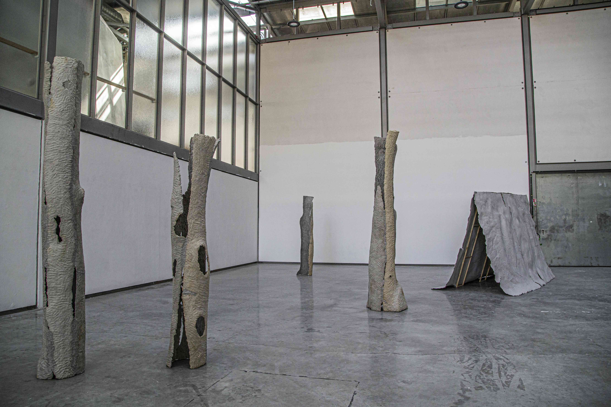
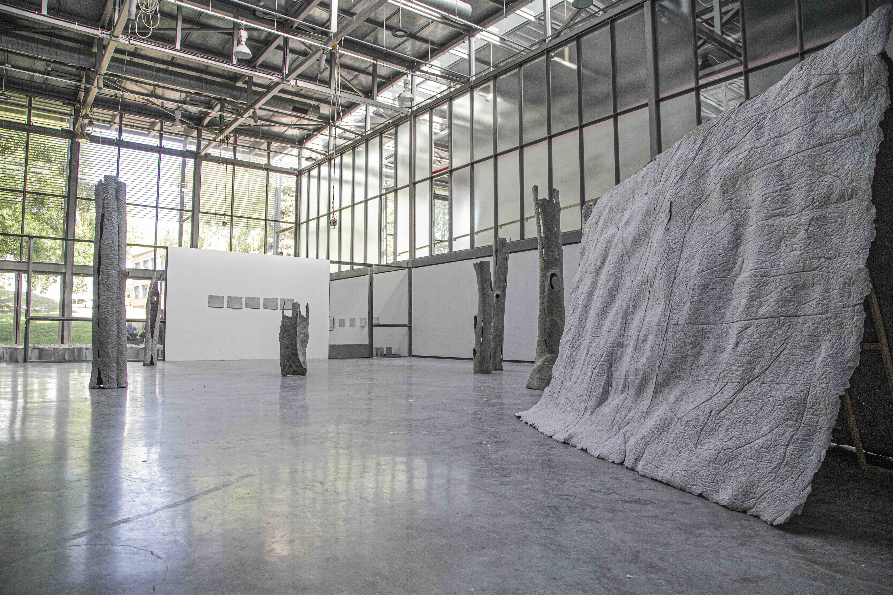
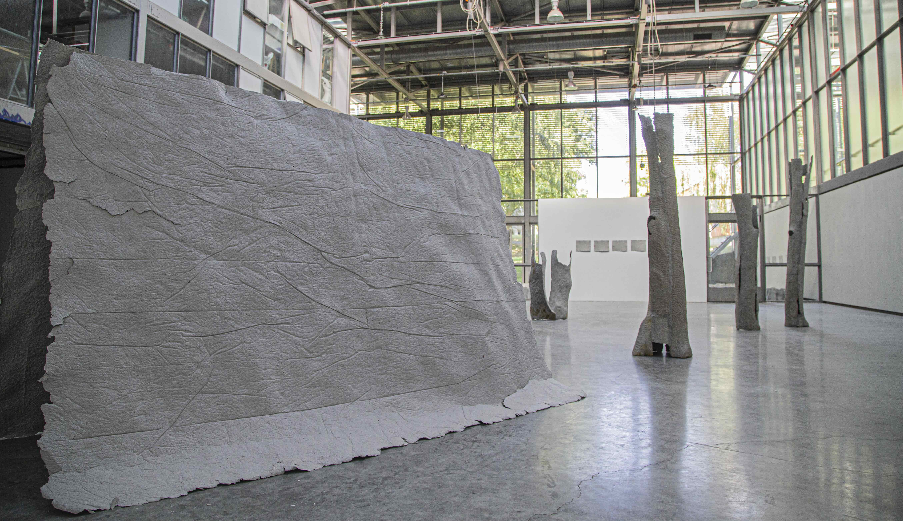
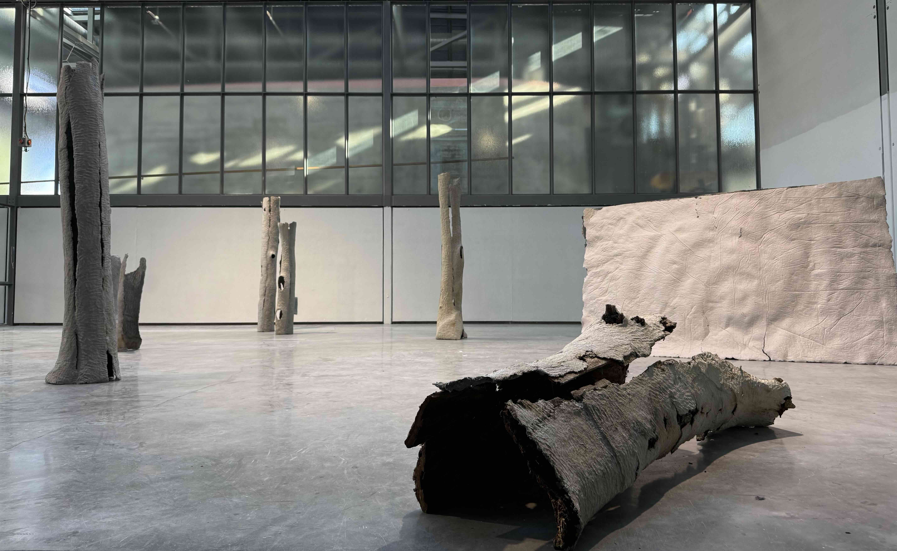
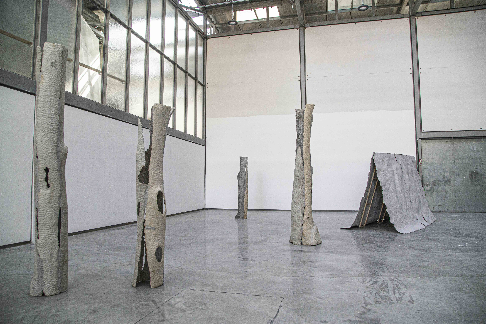

Tente (Cabane fragile)
Cette installation associe une grande feuille de papier à une structure en bois pour faire apparaître une forme évoquant à la fois une montagne, une tente et une cabane. La feuille est réalisée à partir de l’empreinte d’une bâche en pâte à papier issue de journaux recyclés.
L’œuvre met en relation la fragilité apparente du papier et la stabilité de la forme triangulaire. Les plis et les traces laissés par la bâche sur le papier évoquent également le relief d’une montagne ou la surface de murailles.
En chinois, le caractère de la montagne s’écrit « 山 », tandis que celui de la maison s’écrit « 家 ». Je cherche ici à faire apparaître un lien figuratif entre la forme sculpturale, le paysage et la structure de l’écriture chinoise.